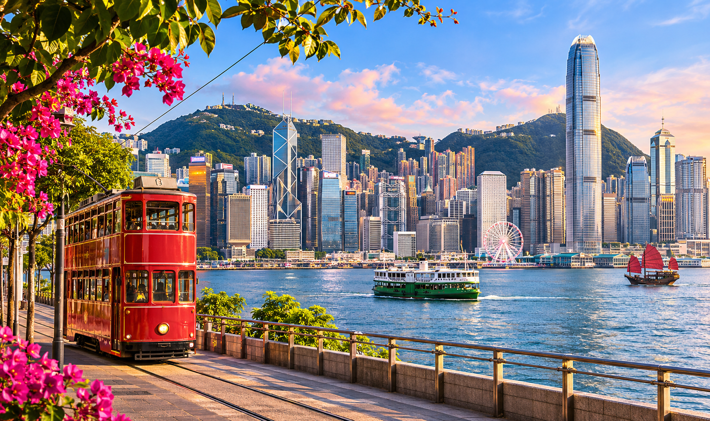
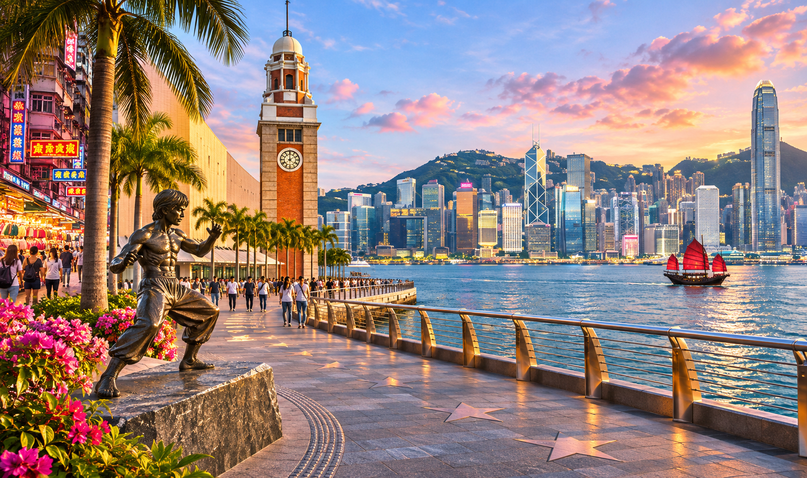

القبلة
شقغج➤
—الفجر—
الشروق—
الظهر—
العصر—
المغرب—
العشاء—
اختر المدينة لعرض المواقيت واتجاه القبلة
🌤️ حالة الطقس
هونغ كونغ—حالة الطقس—
تسيم شا تسوي—حالة الطقس—
مونغ كوك—حالة الطقس—
كوزواي باي—حالة الطقس—
شا تين—حالة الطقس—
لانتاو—حالة الطقس—
اختر المنطقة الرئيسية

جزيرة هونغ كونغ
Hong Kong Island · 香港島سنترال وكوزواي باي، التسوق والمطاعم والمعالم
116 مكانًا
كولون
Kowloon · 九龍تسيم شا تسوي ومونغ كوك، الأسواق والمعالم
149 مكانًاالأقاليم الجديدة
New Territories · 新界شا تين وجزيرة لانتاو، ديزني والطبيعة والمعالم
80 مكانًاابدأ بالبحث باسم المكان أو اختر المنطقة أدناه.
مهم: انتهى عرض «سيمفونية الأضواء» القديم يوم 18 نوفمبر 2026. العروض الحالية تشمل سنترال الشتوي (19:00–23:00 كل 30 دقيقة)، تسيم شا تسوي الشتوي (19:00–23:00)، وعرض القمة، وديزني لاند حسب الجدول اليومي. يُرجى التحقق من مواعيد الفعاليات الموسمية قبل الذهاب.
معلومات عن الوجهة
اكتشف هونغ كونغ
345 مكانًا موزعة على ثلاث مناطق رئيسية. اختر المنطقة الرئيسية لاستعراض الأسواق، المجمعات، مطاعم البيتزا، الفنادق والمعالم. الاسم العربي والإنجليزي متوفران، والمعلومات غير الموثقة لا تُعرض كتفاصيل مؤكدة.